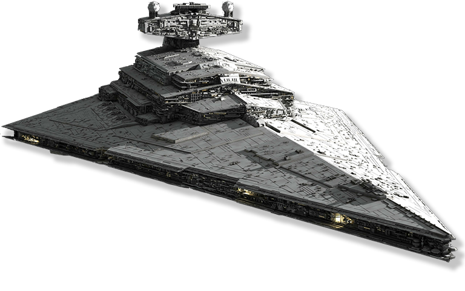

Coastal defender stormtrooper Coastal defender stormtroopers, more commonly known as shoretroopers, were a specialized variant of the Galactic Empire's stormtroopers trained and equipped for combat in tropical environments. Stationed at the top secret Imperial security complex on the tropical planet Scarif, shoretroopers patrolled the beaches and bunkers of the facility.
Patrol trooper Patrol troopers were a specialized variant of the Galactic Empire's stormtroopers, acting as a rapid response policing force within urban environments. As the Empire reinforced its hold on planets across the galaxy, local defense forces were being supplemented and eventually completely replaced by stormtroopers.
Shadow trooper Shadow troopers were elite and highly trained stormtroopers that served the Galactic Empire during the Galactic Civil War against the Rebel Alliance. They wore distinguishing black suits of experimental armor coupled with portable cloaking devices, rendering them almost completely invisible and highly suited for stealth missions.
Scout trooper Scout troopers, also known as biker scouts and Imperial sharpshooters, were specially trained stormtroopers of the Imperial Army's Stormtrooper Corps. They were used by the Galactic Empire on a range of missions, which mostly involved reconnaissance. They had lighter armor than standard stormtroopers, much like their urban counterparts, patrol troopers.
Storm Commando Storm Commandos were the special forces of the Galactic Empire's Stormtrooper Corps and trained to deal with extreme combat situations. They were equipped with silver scout trooper armor and carried E-11 blaster rifles. Some Storm Commandos were members of the elite 501st Legion, Darth Vader's personal stormtrooper legion.
Phase II dark trooper
Phase II dark troopers were heavily armored elite experimental units conceived through the Dark trooper program and used by the Galactic Empire some time between the Battle of Yavin and the Battle of Hoth. They were equipped with assault cannons that enabled them to storm enemy defenses.
wanted
wanted dead or alive
Catch the criminal - earn money!
chewbacca 300 cred.
Han Solo 1000 cred.
Luke Skywalker 2000 cred.
Leia Organa 2000 cred.
Yoda 300 cred.
R2-D2 50 cred.
Imperial Navy
Fly for the vast Empire!
See the GALAXY - Join the IMPERIAL NAVY

See the local recruiter to find out now.
YOU CAN SAVE THE GALAXY
conditions
Join The Impire - is a great option.
Reasons to Join
Serve Your planet
Get in Shape
Be Part of Something Bigger Than Yourself
Earn Respect and Admiration from Your Peers
Honor a Family Tradition
Get Out of your Hometown
Gain Worldly Perspective
See What You’re Made of!
Reasons To NOT to Join
If you don’t like exercise
If you are jedi
If you are wookiee
If you are ewok
If you are Skywalker
If you are from Tatuin
If you don't like Empire
Joining the military is a huge life decision and not one that should be taken lightly.